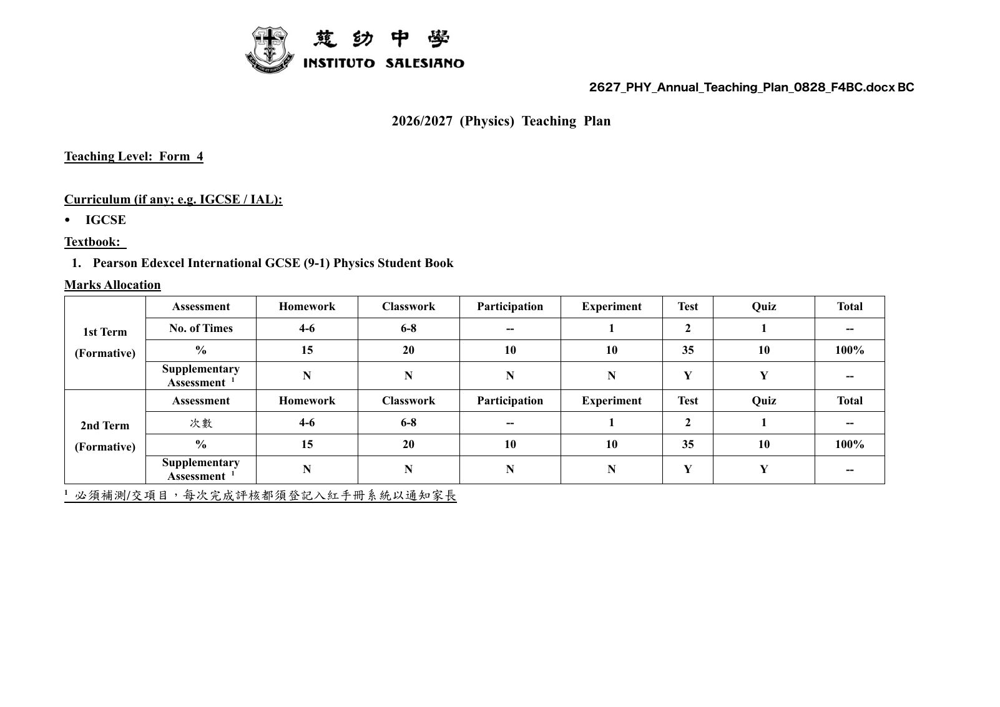
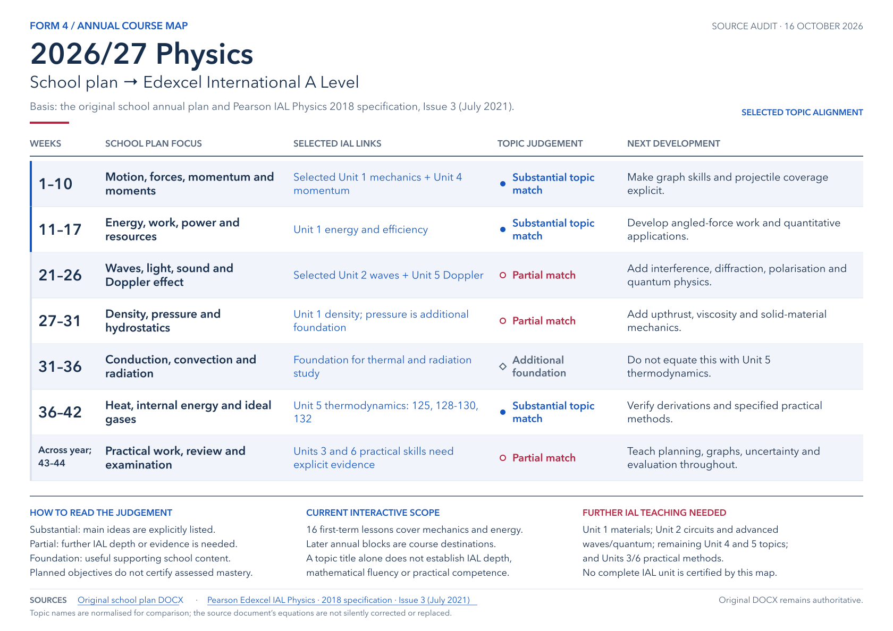

The year ahead
From our school plan
to A Level physics.
01
The source comes first
Our 2026–27 teaching plan
The school's original annual plan sets out the sequence, learning objectives, activities and assessment weeks. Use it alongside the topic map below.
The DOCX is the unmodified original. The 15-page PDF is a reading copy with layout adapted for page fit.
Read the plan on this page
If your browser cannot display the PDF, use the PDF reading-copy link above.

02
A topic-by-topic connection
Where does this take us in IAL?
有主題銜接唔等於完成整個 A Level，教學計劃列出內容唔等於已學懂，實驗名稱對應唔等於已具備實驗評核能力。
How to read the judgements
| School weeks | What we plan to study | Connection to IAL | Judgement & next step |
|---|
What you can explore here today
16 lessons in mechanics and energy
Take the map into class
A one-page course map
Open the full-size map to zoom, print the PDF, or edit the SVG's text and shapes in a vector editor.
Teacher · Edit this guide
Open in Canva to edit ↗The map contains editable text and vector shapes. The website's mapping and evidence are kept in curriculum-map-data.js; lesson introductions are kept in lesson-introductions-data.js. The Canva copy is separate: edits there do not automatically change this website or its SVG/PDF. After editing the website files, export a fresh student website from a lesson's worksheet library.

Inspect the detailed mapping & source evidence 15 topic groups
Each entry gives the school's stated objective, the specific IAL statements it supports, and the further teaching or evidence needed. IAL links open the relevant specification page.
03
Make the next step explicit
What needs additional teaching?
These requirements are not explicit in the written annual plan. They are useful planning questions for a future IAL pathway, rather than a judgement about what a student has already learned.
Around the teaching blocks
The school-year calendar
Holiday, study and examination weeks retained from the original plan.